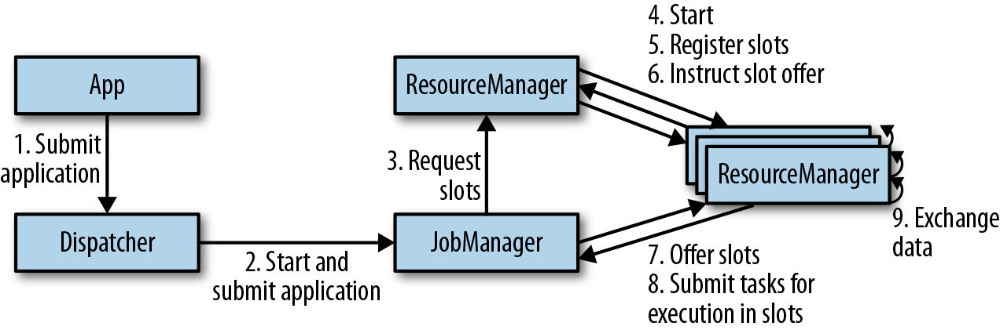
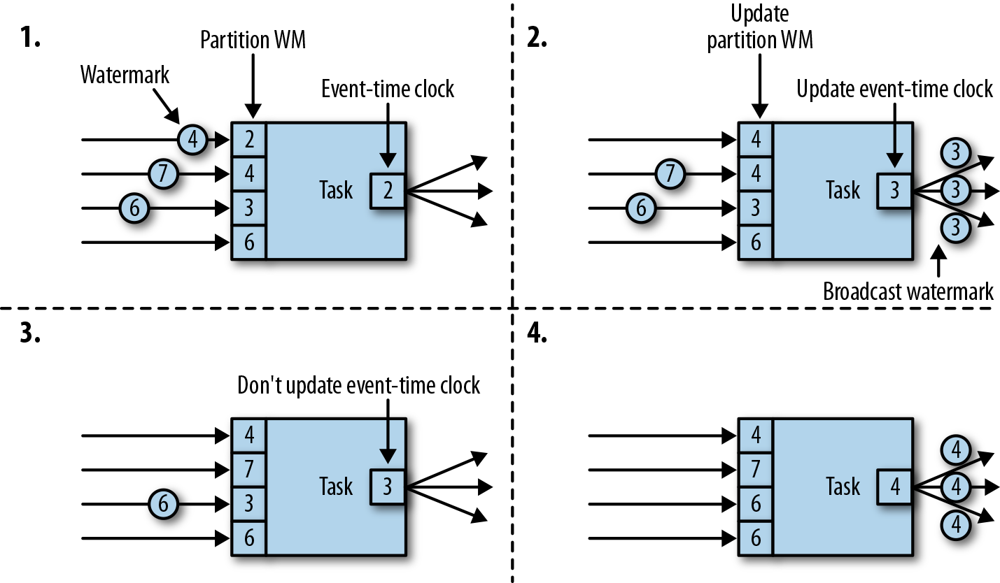

3. Apache Flink 架构
系统架构
- 架构概述
- 核心功能：分布式数据流处理
- 集群管理器：Apache Mesos、YARN、Kurbernetes
- 分布式存储：HDFS、S3
- HA领导选举：ZooKeeper
- 搭建组件
- JobManager：单个应用程序的执行，JobGraph -> ExecutionGraph -> 申请 slot -> 检查点
- ResourceManager：管理 TaskManager 中的 slots，管理申请和使用完的释放
- TaskManager：工作进程包含多个线程，slots 作为资源进行分配
- Dispatcher：接收提交的应用，启动 JobManager 对应这个应用

- 应用部署
- 框架模式：打包成 JAR 文件，通过客户端提交到运行的服务上
- 库模式：绑定到应用所在的容器镜像中，常用于微服务架构
- 任务执行

- 高可用性设置
- TaskManager 故障：JobManager 向 ResourceManager 申请更多的 slot
- JobManager 故障：ZK 请求获取信息，向 ResourceManager 申请 slot，重启重置检查点
Flink 中的数据传输
- TaskManager之间会有一个或者多个TCP连接
- 基于信用值的流量控制：缓冲合并发送数据
- 任务链接：降低本地通信开销（要求相同并行度）
事件时间处理
- 时间戳+水位线
- 在数据源完成：SourceFunction
- 周期分配器：AssignerWithPeriodicWatermarks
- 定点分配器：AssignerWithPunctuatedWatermarks

状态管理
- 算子状态（operator state）：列表状态、联合列表状态、广播状态
- 键值分区状态（keyed state）：单值状态、列表状态、映射状态
检查点、保存点及状态恢复
- 一致性检查点：等待任务处理完所有的输入数据
- Flink 检查点：检查点分隔符（Chandy-Lamport 分布式快照算法）
- 保存点